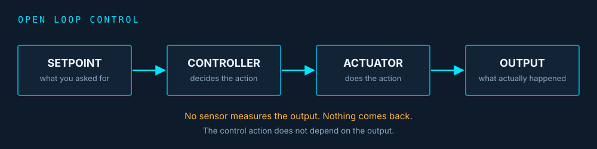
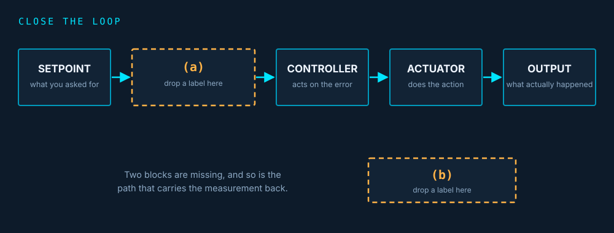
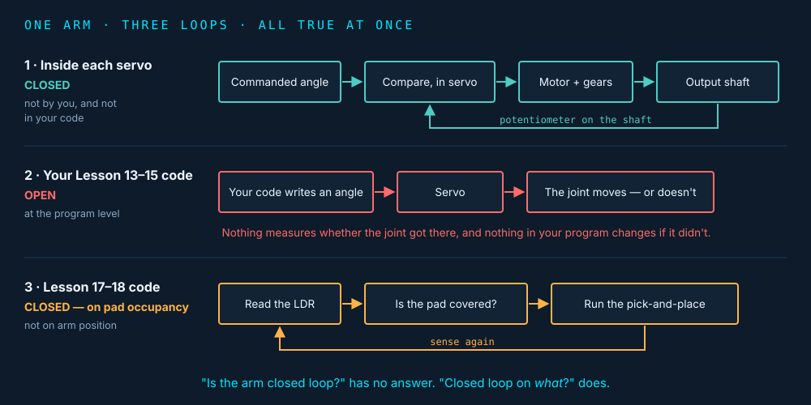
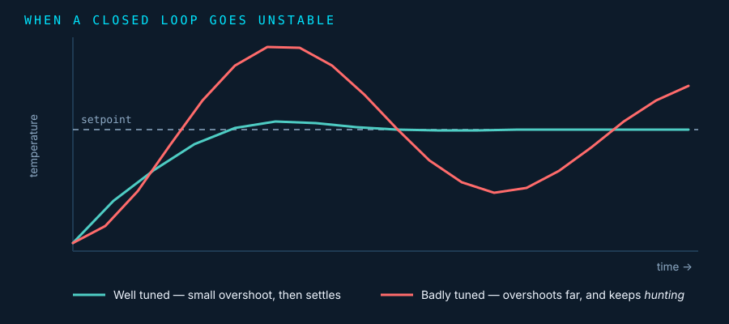

This is the one people get wrong
The most common mistake in this topic is deciding that anything automatic, electronic or modern must be closed loop. It isn't. Plenty of systems act without ever checking the result.
No marking, and you don't need any of this lesson's vocabulary to answer it. You will come back to this at the end and decide whether you still agree with yourself.
Learning intentions
- Define open loop and closed loop control, and represent each as a diagram
- Apply a two-part test to classify a real system, instead of guessing
- Explain how the error is determined in a closed loop control algorithm
- Justify a choice of open or closed loop control for a specific job
Success criteria
- Classify a system and name the variable you classified it on
- Name a system that is full of sensors and still open loop
- Give one real disadvantage of closed loop control
- Say which parts of our own arm are open loop and which are closed
The middle of three theory lessons
Lesson 9 — done
A control algorithm reads sensors, computes, and outputs to actuators. You met setpoint (the desired state) and error (the gap between the setpoint and the current state).Lesson 10 — today
Does the system measure its own output and change what it does because of that measurement? That single question separates open loop from closed loop.Lesson 11 — next
Once you have closed the loop, what do you actually do about the error? On/off, proportional, and PID.By the end of this lesson, the answer to "is this closed loop?" should never be a guess. It should be the result of two specific questions you ask in order — and you will be able to say what those questions are.
Open loop control
In open loop control, the control action does not depend on the output. The system acts on its instruction, and never measures whether the result was achieved. Nothing comes back.
Sensor
A part that measures something physical and turns it into a number the system can use — a temperature, a distance, how much light is falling on it. It only ever reports; it never moves anything.Actuator
A part that does something physical — a motor, a servo, a heating element, a valve. It only ever acts; it never measures anything.Controller
The part that decides. On our arm this is the Arduino running your code. It takes in whatever information it has and works out what to tell the actuators to do.This whole lesson comes down to one question about those three: does the controller ever get told, by a sensor, what the actuator actually achieved?
How to read the diagram below. Each box is a stage in the system, not a physical object — a box can be a part, a person, or a few lines of code. Each arrow means "this feeds into that", and the arrowhead shows which way the information or the action travels. Read it left to right, like a sentence.
Click each block in the diagram to see what it does.

Toaster on a timer
Runs the element for 90 seconds. It has no idea whether the bread came out toasted, burnt, or still frozen.Why anyone would build this
Simple, cheap, predictable, and impossible to make unstable. If the relationship between input and output is reliable, open loop is the right answer, not a lazy one.Quick check: the toaster's timer runs out and the toast pops up. What does the toaster know about the bread?
Closed loop control
In closed loop control, a sensor measures the actual output, and that measurement is fed back and compared against the setpoint. The difference is the error, and the controller acts on the error — not on the original instruction alone.
Oven with a thermostat
Set 180 °C. It measures the actual air temperature, and switches the element on or off depending on how far off it is.Two blocks the open loop diagram doesn't have
A sensor on the output, and a comparison that the measurement returns to. The error is formed at that comparison.The feedback path is the loop
That returning line is literally what the word "closed" refers to. Remove it and the loop is open.Close the loop yourself
Here is the open loop chain again, with two blocks missing. Using the description above, work out what goes in each one.
Drag each chip into the box it belongs in (or click a chip, then click a box — same result). One chip belongs in neither box. Place your chips, then check.

One more thing is missing: the path itself. The sensor has measured the output. Where must that measurement be carried back to?
Write each definition in your own words. Don't copy the text above.
Watch out for "closed loop means it has feedback" with no statement of what is fed back or what is done with it. It isn't wrong, but it's the answer that lets you keep the misconception. Your definition should say measures the output and the action depends on the difference.
Drawing both diagrams yourself in draw.io is on the worksheet, not here — it's the one task in this lesson where you produce the diagram rather than read one, so it's worth doing properly.
In one sentence
Open loop acts on its instruction and never checks the result; closed loop measures the output, compares it with the setpoint, and acts on the difference — that returning feedback path is the only structural difference between the two diagrams.Two questions, in this order
From here on, you never classify a system by how it feels. You run a procedure.
1 · What is the controlled variable?
Name the one thing the system is trying to hold at, or bring to, a value. Temperature. Speed. Position. Water level.On the two diagrams you just saw, this is what the OUTPUT box stands for — and in a closed loop system it is the thing the sensor is pointed at.
If you can't name it, you can't classify the system — you're guessing.
2 · Does the system measure that variable, and change its own action because of the measurement?
Both halves are required.Yes to both → closed loop.
No to either → open loop.
Two worked examples
Here is the test run all the way through on the two machines from the last section, one step at a time. Read both before you try it yourself.
Worked example 1 — the toaster
Step 1 · What is the controlled variable?How toasted the bread is.
Careful: it is not "the timer". The timer is how the machine tries to get the result — the controlled variable is the result you actually want.
Step 2 · Does it measure that, and change its action because of the measurement?
No. It measures nothing at all. It runs the element for the time you set, and stops.
No to step 2 → open loop.
Worked example 2 — the oven
Step 1 · What is the controlled variable?The air temperature inside the oven.
You set 180 °C, so 180 °C is the setpoint and temperature is the thing being controlled.
Step 2 · Does it measure that, and change its action because of the measurement?
Yes. The thermostat measures the actual air temperature, and switches the element on or off depending on how far off 180 °C it is.
Yes to both → closed loop.
Two things to notice about how those ran. The variable was named before anything else was asked — that is the whole reason for the order. And step 2 is about the machine's own behaviour changing, not about whether a measurement is taken somewhere in the building.
Notice what the test does not ask: whether the system is electronic, whether it's automatic, whether it's clever, or whether it has sensors on it somewhere.
A 200-year-old steam governor
Two heavy metal balls spin on hinged arms above the engine. The faster the engine runs, the further out they swing, and the arms pull a collar that squeezes the steam valve shut — so the engine slows down. Slow it too far and the balls drop, the valve opens, and it speeds back up. No electronics, no code, nothing you would call a computer. Speed is measured and the action changes because of it, so it is closed loop.A brand-new microcontroller running a timed sequence
Modern, programmable, digital. It runs its stored sequence and never measures anything — open loop.
Optional — an animation of the governor above, 3:09. Opens on YouTube in a new tab.
Can't watch the video? Here is what it shows.
An animated governor spins alongside the engine it controls. When the load on the engine suddenly increases, the engine slows, the spinning balls drop inward, and the linkage opens the steam valve further until the speed comes back up. When the load drops away the opposite happens. Watch for two things: the machine is correcting for a change nobody told it about, and it does not snap straight to the right speed — it overshoots and swings above and below the target a few times before settling. That settling behaviour comes back in this lesson's extension section.
Quick check: which of these does the two-question test not ask about?
In one sentence
Never classify a system by how it feels: name the controlled variable first, then ask whether the system measures that variable and changes its own action because of the measurement.A sensor does not make it closed loop
Before you read on. A washing machine has a water-level sensor that stops it filling when the drum reaches the right level. It also runs its wash cycle for a fixed number of minutes. Is the washing machine closed loop?
Choose one — the explanation only appears after you commit.
"It has a sensor, so it's closed loop" is the single most common wrong answer in this topic.
The sensor must measure the controlled variable
The washing machine's water-level sensor closes the loop on water level — it does nothing at all for how long the wash cycle runs, which is still just a timer.So run the test separately, per variable
"Washing machine" is not a controlled variable. "Water level" is. "Cycle timing" is. You get a different answer for each, and both answers are correct.If you take one sentence away from this lesson, take that one.
Measurement without consequence is not feedback
Commit before reading on. A machine has a temperature sensor. When the temperature goes above 60 °C, a red warning LED turns on. Nothing else in the machine changes. Is this closed loop control of temperature?
Choose one — the explanation only appears after you commit.
If you picked "only if a second sensor is added", that is the misconception in its purest form and worth sitting with: the system does not need more measuring. It needs the measurement it already has to do something.
An indicator
Tells a human something. The machine's own behaviour is unchanged, so the second half of the test fails.Feedback
Changes what the machine does next. The measurement has to reach the control action, not just a light.So one machine can be closed loop for one variable and open loop for another, at the same time — and a machine can measure exactly the right variable and still be open loop. Say which variable you mean, and check that the reading actually changes the action. Every time.
In one sentence
A sensor proves nothing on its own — it has to measure the variable you were asked about, and the measurement has to change what the machine does. A light that only tells a human is an indicator, not feedback.Where you draw the boundary changes the answer
Vehicle steering. You turn the wheel 30°, the steering mechanism turns the road wheels by a proportional amount, and that is the end of it. The car never measures whether it ended up where you wanted.
The machine alone
Open loop. No sensor measures the car's position on the road, and no measurement changes the steering action.Machine + driver
Closed loop — but the loop is closed by the human. You look at the road, see the error, and correct it. The feedback path runs through a person rather than through a sensor and a circuit.Both answers are right. What's wrong is not saying which system you mean. In this course, when a question asks about a system, classify the machine — unless the question puts a person in it.
Quick check: an exam question asks you to classify "a vehicle's steering system". Which system do you classify?
Traffic lights: it depends on the intersection
This is the case students argue about most, and the argument is worth having, because both sides are describing real intersections.
Fixed-timing
Each phase runs for a set number of seconds regardless of traffic. Nothing measures the queue. Open loop.Actuated
Inductive detector loops — coils of wire set into the road just behind the stop line — or pedestrian buttons detect who is waiting, and the controller extends or shortens the phases in response. The coil works because the metal underside of a car changes its electrical behaviour, which the controller reads as "a vehicle is sitting here". Closed loop.The physical difference
A detector in the road surface at the stop line, plus control logic that actually uses it. Everything else about the two intersections can look identical from the footpath.Two of the systems in the table coming up have no single right answer. That is deliberate. State the design you assumed, and your answer is right either way — what would be wrong is not saying.
In one sentence
Some systems genuinely have two right answers, depending on the design or on where you draw the system boundary — so say which one you assumed. In this course, classify the machine unless the question puts a person in it.How the error is determined
Sensors measure the state of the system after the control output. Those values are used to find how far the system is from the desired setpoint. The difference between the measured state and the setpoint is the error.
Worked: cruise control
Setpoint 100 km/h. The sensor measures 94 km/h.error = setpoint − measured = +6 km/h
The car is 6 below where it should be → apply more throttle.
The rule
Subtract the measurement from the setpoint. Sign conventions differ between industries — "+6" and "6 below setpoint" are both fine. What matters is that a subtraction happened at all, and that its result drives the next action.Your turn. An oven's setpoint is 180 °C. Its sensor measures 185 °C. What is the error?
And what should the controller do about it?
What is the error when nothing is measured?
Commit before reading on. A student writes: "In an open loop system the error is always zero." Is that right?
Choose one — the explanation only appears after you commit.
Saying "the error is zero" implies the system checked and found it was on target, which is exactly what it did not do. If you wrote "the error is zero because it doesn't measure", you have the mechanism right and the conclusion wrong — and that one will follow you into Lesson 11, where the size of the error is the whole point.
In one sentence
The error is what you get when you subtract the measurement from the setpoint — and an open loop system has no error term at all, because it never takes the measurement to subtract.Run the test on nine systems
This is the part of the lesson that decides whether you've got it. Everything you need has now been taught: the two-question test, the two ways a sensor can fool you, and what to do when the answer depends on where you draw the boundary.
One more worked example first — an electric kettle
Step 1 · What is the controlled variable?The temperature of the water.
Step 2 · Does it measure that, and change its action because of the measurement?
Yes. A sensor in the kettle detects when the water reaches boiling, and the kettle switches its own element off because of that reading.
Yes to both → closed loop. Note that it is closed loop on water temperature. It is not closed loop on how full it is — nothing stops you boiling an almost-empty kettle.
Now do the same nine times. For each system, name the controlled variable first. The second question stays locked until you do — that order is the whole point, so the page enforces it rather than just recommending it.
Two of those nine — traffic lights and vehicle steering — accept either answer, because both are genuinely correct depending on the design or the system boundary. Marking one of them right and the other wrong would teach you to guess the expected answer instead of running the test, which is the exact habit this lesson exists to break.
In one sentence
Run the two questions in order, every time, and the answer stops being a guess: controlled variable first, then measure-and-act.Closed loop is not automatically better
Having spent the lesson learning to spot systems that only look closed loop, it would be easy to come away thinking closed loop is the good answer and open loop is the lazy one. It isn't.
Advantage
Because it monitors the result of its own output, a closed loop system can adjust its control values to get closer to the setpoint — including correcting for disturbances it was never told about: a hill, a heavier load, a draught.Disadvantages
More complex and more expensive: extra sensors, extra code, and calibration — the work of finding out what this particular sensor's readings actually mean in this particular place. And it can be made unstable: react too hard to the error and the system shoots past the setpoint, over-corrects the other way, and keeps swinging instead of settling. The extension section at the end shows what that looks like.Most real systems are a mix. Your washing machine closes the loop on water level and water temperature, and runs the cycle timing open loop. Choosing correctly per variable is the engineering.
Quick check: which of these is a genuine disadvantage of closed loop control?
The reasoning to aim for: the relationship between input and output is reliable enough that measurement isn't worth what it costs.
In one sentence
Closed loop costs sensors, code, calibration and the risk of instability, so it is not automatically the better choice — most real machines are a mix, chosen one variable at a time.Three different loops, in one machine
Commit before reading on. You've built a MeArm. Four servos, an Arduino, and from Lesson 17 an LDR — a light dependent resistor, a sensor whose resistance changes with how much light falls on it — sitting under the pickup pad, so the code can tell whether something is covering the pad. Is our arm a closed loop system?
Choose one — the explanation only appears after you commit.
1 · Inside each servo
A hobby servo has a potentiometer on its output shaft — a component whose resistance changes as the shaft turns, so the voltage across it is a direct read-out of the angle the shaft is actually at. A small circuit inside the servo compares that against the angle it was commanded to reach, and drives the motor until the two match. Closed loop — and it's why a servo holds its position when you push on it, where a plain DC motor would just give way. But the loop is inside the servo: not by you, and not in your code.2 · Your Lesson 13–15 code
You write an angle. Nothing measures whether the joint got there, and nothing in your program changes if it didn't. Open loop at the program level.3 · Lessons 17–18, with the LDR
The code reads the pad, decides whether an object is present, acts, and reads again. Closed loop on pad occupancy — the arm's position is still open loop.

Optional — a 3D animation of what is actually inside loop 1, 6:44. You may have already seen this one in Lesson 9. Opens on YouTube in a new tab.
Can't watch the video? Here is what it shows.
The animation cuts a servo open. Inside are a small DC motor, a gearbox that trades the motor's speed for turning force, the output shaft that your arm's plywood link bolts onto, and — the part that matters here — a potentiometer geared to that output shaft. As the shaft turns, the potentiometer's resistance changes, so the circuit beside it always has a live reading of the shaft's real angle. That circuit compares the real angle with the angle your servo.write() asked for, and runs the motor in whichever direction closes the gap. That comparison is a genuine closed loop — it is just sealed inside a plastic case, with no wire that could ever carry the reading back out to your Arduino.
Quick check: the servo closes a loop on its own shaft angle. Can your Arduino program read that measurement?
Servo.read() exists, but it just hands you back the last angle you commanded, which tells you nothing about whether the joint moved. This is exactly why loop 1 being closed does not make loop 2 closed.To fix it you would need a measurement of actual joint position — an encoder (a sensor on the joint that counts how far it has really turned), or a servo that reports its own position back — and code that compares it against the commanded angle before continuing — plus a decision about what to do when they disagree.
A second, more elegant answer: re-check the LDR after the pick to confirm the pad is now empty, or add a switch at the gripper that detects whether an object is actually held. Both close a loop on the outcome using a sensor you already have or could add cheaply.
In one sentence
Our own arm is closed loop inside each servo, open loop in your Lessons 13–15 code, and closed loop on pad occupancy in Lessons 17–18 — three loops on three variables, all true at once, which is why "is the arm closed loop?" has no single answer.A production line arm — which would you choose?
A programmable robotic arm moves components from one place to another on a production line. Recommend open or closed loop control, and justify it. Both answers can be argued well. The justification is the mark.
Your recommendation:
There is no marked answer here. Your choice is recorded so the follow-up question can be aimed at whichever side you picked.
The case for closed loop: a production line needs very high reliability, and the whole line stops if a component is mispositioned. The arm should continually sense the difference between its position and the component's position so it can actuate the gripper at exactly the right point, even if something shifts.
Both verdicts are correct with a sound justification. A verdict supported by "because it's better" is worth nothing on either side.
If you chose open loop: a single unnoticed positioning error propagates — the arm keeps running a sequence that no longer matches reality, and nothing stops it.
This is your build, in Lessons 17–18. You will make this exact decision with a real arm and a real object on a pad — and the answer you have to live with is the one your code does, not the one you wrote down.
In one sentence
Both verdicts can be argued for a production line arm — the justification is what earns the mark, not the verdict.When a closed loop goes unstable
A closed loop system can be made unstable. If the controller reacts too strongly to the error, it overshoots the setpoint, then over-corrects the other way, and oscillates instead of settling — a behaviour called hunting.

There is no model answer for this one, on purpose. It is the opening question of Lesson 11, and the class compares predictions before anyone is told the answer — so your prediction is worth keeping exactly as you first wrote it.
Your answer is saved into the work summary at the end of this page. Print it and bring it to Lesson 11.
Today's key ideas
1 · Two questions
What is the controlled variable? Does the system measure it and change its action because of the measurement? Yes to both, or it's open loop.2 · Sensors and automation prove nothing
A system can be full of sensors and still be open loop on the variable you were asked about — and a measurement that only lights a lamp is an indicator, not feedback.3 · Closed loop is a trade-off
Better correction, at the cost of complexity, expense, and the possibility of instability. Most real machines are a mix, chosen per variable.Vocabulary check
If any of these is still fuzzy, the section named beside it is where it is explained.
| Sensor | A part that measures something physical and turns it into a number. It only reports; it never moves anything. §2 |
| Actuator | A part that does something physical — a motor, a servo, a heating element. §2 |
| Controller | The part that decides — on our arm, the Arduino running your code. §2 |
| Open loop control | The control action does not depend on the output. The system acts on its instruction and never measures the result. §2 |
| Closed loop control | A sensor measures the output, that measurement is compared with the setpoint, and the action depends on the difference. §2 |
| Feedback path | The return line carrying the measurement back to be compared with the setpoint — literally what "closed" refers to. §2 |
| Setpoint | The desired state of the system — what you asked for. §2, §6 |
| Controlled variable | The one thing the system is trying to hold at, or bring to, a value. Always name it before classifying anything. §3 |
| Error | The difference between the measured state and the setpoint. An open loop system has no error term at all. §6 |
| Indicator | A measurement that only tells a human something. It does not change the machine's action, so it is not feedback. §4 |
| System boundary | What you decide counts as "the system" — machine alone, or machine plus the person operating it. It can change the answer. §5 |
| Calibration | Finding out what this particular sensor's readings mean in this particular place. §8 |
| Instability / hunting | Reacting so hard to the error that the system overshoots, over-corrects the other way, and keeps swinging instead of settling. §8, §11 |
| Potentiometer | A component whose resistance changes as a shaft turns, so the voltage across it reads out the angle. It is what closes the loop inside a servo. §9 |
| LDR | Light dependent resistor — a sensor whose resistance changes with the light falling on it. Ours sits under the pickup pad. §9 |
Download a summary of your answers
This page saves your progress in this browser only — nothing is sent anywhere automatically. Add your name below to download or print your notes and answers, for revision or to hand in.
Enter your name to enable the download.